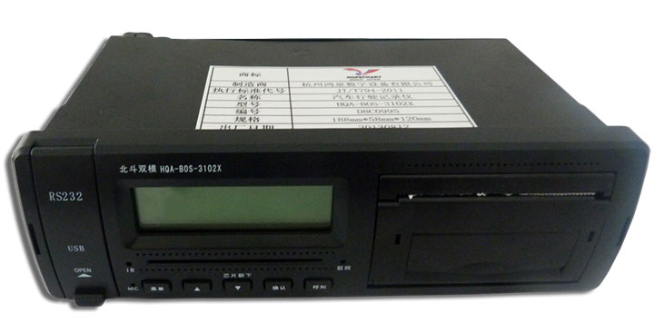

终端简介
终端专业为国内各大运营商客户设计，从产品成本与实车安装出发，在满足车辆基于北斗监控的交通部部标功能的基础上，可通过北斗终端和外接液晶屏的配合，实现用户倒车监视、摄像头监控、影音播放、车辆导航等功能。用户通过选配，既能满足自身后装的需求，也可以满足前装的需求。
产品功能
功能 |
备注 |
定位功能 |
采用北斗双模定位模块 |
远程连接 |
采用GSM |
开关量采集 |
|
脉冲量采集 |
采集车速和转速，并上报到服务器 |
CAN信息采集 |
其中预留1路 |
232接口连接 |
前置DB9接口，用于调试或行车记录导出 |
485接口连接 |
用于支持2路数字摄像头，可继续扩展其他485接口 |
USB接口连接 |
|
AD量采集 |
2路，支持高精度油感 |
打印机 |
内置打印机 |
显示屏 |
122*32单显屏，用于人机交互，带背光 |
驾驶员身份识别装置 |
内置接触式IC卡装置 |
图片抓拍功能 |
支持在网站上抓拍并回传显示照片 |
输出量数量 |
2路预留（继电器控制），根据客户需求 |
语音报读装置 |
内置TTS语音合成装置和小喇叭 |
一键呼叫装置 |
支持一键呼叫中心 |
劫警装置 |
外接按钮 |
内置电池 |
支持终端自身供电 |
交通部部标 |
支持交通部部标（JT/T 808）的所有功能 |
行车记录仪(3C) |
符合GB/T 19056-2012标准 |
车辆身份信息 |
支持显示车牌号、终端号等车辆身份信息 |
蜂鸣器 |
内置蜂鸣器 |
远程程序更新 |
支持远程更新程序 |
远程配置参数 |
支持远程更新参数 |
英文版 |
可以根据客户需求定制 |
不规范驾驶模型 |
支持交通部和陕汽所有要求的不规范驾驶模型 |
断电长时间保存数据 |
（未发送完成的数据）可至少保存最后1万条数据 |
采用协议 |
808协议 |
压缩算法 |
不支持压缩算法，数据上报不能压缩上报 |
生产序号输入 |
暂时不支持 |
定时唤醒 |
支持设置每隔一段时间启动一次，并上报定位信息的功能 |
偷油报警 |
产品可以在ACC ON和OFF的状态下监测油量，发生偷油情况时，能进行报警，并上报至服务器 |
限速功能 |
支持限制车辆行驶的最高速度 |
远程诊断 |
产品可以采集车辆的故障信息，并上报到服务平台，实现远程读取车辆故障 |
多中心接入 |
产品可同时连接两个或两个以上的监控中心，并能获取监控中心下发的信息，产品能按设置的时间定期连接设定的监控中心平台 |
区域提醒 |
产品可存储有不少于24个多边形或圆形区域，当车辆驶入禁入区域或驶出禁出区域时触发，监控区域可由监控中心远程设置 |
线路偏离提醒 |
产品可存储不少于24条路线，每条路线最多16个点，当车辆偏离设定的线路时，触发报警，监控线路可由监控中心远程设置 |
消息接收 |
设备可以接收到服务器的消息，并能自动以语音和文字两种方式同时播放消息 |
盲点补报 |
当联网遇到网络不正常或其它原因导致产品不能联网，产品能够自动保存数据，并在下次正常联网时一起上报数据 |
支持超速报警 |
终端默认超速报警值为100码，车速达到后，设备支持超速报警提醒 |
掉电报警 |
终端在ACC的OFF情况下，如果给终端供电的电瓶突然断电，终端即会发生掉电报警 |
遥控器控制功能 |
支持用遥控器设置车辆身份信息等终端参数 |
后续支持结合显示屏使用 |
支持显示屏同步显示终端信息 |
U盘程序升级 |
支持用U盘更新程序 |
双IP连接功能 |
支持终端默认连接多路平台，其中1路默认连接鸿泉O-BOS平台，其中DNS和IP地址都能访问，并且间隙性连接 |
快速开户设置 |
快速终端快速开户功能 |
GPS车速模拟脉冲车速 |
支持配置是否开启此功能 |
K值自动校准 |
支持用GPS车速和脉冲车速对比，来校准K值 |
关键参数
- 122*32，点阵液晶显示屏，带背光显示
- 钣金工艺，高强度抗振性能
- 阻燃塑胶材料
- 接触式IC卡身份识别
- USB Host
- 支持2路CAN，其中预留1路
- 支持16路开关量，其中预留8路
- 支持2路脉冲量（可接普通车速传感器或接C3信号）
- 支持打印机（选配）
- 485接口
- 232接口
- 宽电源工作系统，支持10.8V到32V工作电压，最高可至36V
- GPRS联网功能
- 高精度北斗定位功能
- 低ACC OFF功耗，ACC OFF电流10mA
- ACC ON平均电流0.12A，最大0.7A
- 2路摄像头抓拍 (485数字摄像头)
- 支持语言，中文
- 标准单锭尺寸：18.8cm*5.8cm*12.0cm
- 重量：1kg（±10%）
电气特性
注：环境温度：15～35℃，大气压：86～106KPa，相对湿度：45～75%RH
性能参数 |
最小值 |
标准值 |
最大值 |
单位 |
||
工作电压 |
10.8 |
27.6 |
32 |
V |
||
极限工作电压 |
－ |
－ |
36 |
V |
||
平均电流 |
－ |
0.12 |
0.7 |
A |
||
ACC OFF |
— |
— |
25 |
mA |
||
北斗定位 |
天线灵敏度 |
－144DB |
||||
定位精度 |
≤5m |
|||||
冷启动定位时间 |
≤35s |
|||||
通道 |
12 |
|||||
GPRS |
天线灵敏度 |
-109DB |
||||
GPRS联网时间 |
60s |
|||||
速率 |
2KB/S |
|||||
AD |
精度 |
1% |
||||
开关量 |
门限电压 |
门限电压：5.3V |
||||
ACC |
响应时间 |
≤0.1s |
||||
ACC |
启动时间 |
≤5s |
||||
USB |
兼容性 |
HOST USB 2.0 |
||||
CAN |
接收CAN数据包 |
不丢包 |
||||
液晶屏 |
||||||
响应时间 |
1ms |
|||||
中心亮度 |
— |
60 |
— |
cd/㎡ |
||
机械特性
项目 |
最小值 |
标准值 |
最大值 |
单位 |
||||||||||||||||||||||||||||
工作温度 |
－30 |
25 |
70 |
℃ |
||||||||||||||||||||||||||||
存贮温度 |
－40 |
25 |
85 |
℃ |
||||||||||||||||||||||||||||
外壳防护等级 |
－ |
IP43 |
－ |
|
||||||||||||||||||||||||||||
功能按键压力 |
250 |
280 |
300 |
gf |
||||||||||||||||||||||||||||
USB插入 |
－ |
1 |
－ |
kgf |
||||||||||||||||||||||||||||
USB拔出 |
－ |
1 |
－ |
kgf |
||||||||||||||||||||||||||||
线束 |
（执行QC/T 417-2001标准） |
|||||||||||||||||||||||||||||||
钣金变形承受力 |
－ |
－ |
1 |
kgf |
||||||||||||||||||||||||||||
塑胶变形承受力 |
－ |
－ |
0.5 |
kgf |
||||||||||||||||||||||||||||
液晶屏承受冲击力 |
－ |
－ |
0.5 |
kgf |
||||||||||||||||||||||||||||
带电跌落高度 |
－ |
5 |
－ |
cm |
||||||||||||||||||||||||||||
功能按键按动次数 |
－ |
100000 |
－ |
次 |
||||||||||||||||||||||||||||
串口插拔次数 |
－ |
10000 |
－ |
次 |
||||||||||||||||||||||||||||
USB接口插拔次数 |
－ |
10000 |
－ |
次 |
||||||||||||||||||||||||||||
钣金工差 |
－ |
±0.2 |
－ |
mm |
||||||||||||||||||||||||||||
塑胶工差 |
－ |
±0.2 |
－ |
mm |
||||||||||||||||||||||||||||
钣金接缝 |
－ |
±0.2 |
－ |
mm |
||||||||||||||||||||||||||||
塑胶接缝 |
－ |
±0.3 |
－ |
mm |
||||||||||||||||||||||||||||
钣金外壳固定螺丝钮力 |
－ |
8 |
－ |
kgf |
||||||||||||||||||||||||||||
塑胶外壳固定螺丝钮力 |
－ |
2 |
－ |
kgf |
||||||||||||||||||||||||||||
丝印胶粘力 |
－ |
3 |
－ |
kgf |
||||||||||||||||||||||||||||
铭牌（面贴）胶粘力 |
－ |
3 |
－ |
kgf |
||||||||||||||||||||||||||||
抗振动性 |
|
|||||||||||||||||||||||||||||||
包装跌落 |
1米水泥地面，3个面 |
|||||||||||||||||||||||||||||||
软件特性
功能 |
默认设置 |
可选设置 |
近光灯 |
高电平有效 |
低电平有效 |
远光灯 |
高电平有效 |
低电平有效 |
右转向灯 |
高、低电平变化有效 |
|
左转向灯 |
高、低电平变化有效 |
|
制动 |
高电平有效 |
低电平有效 |
倒档 |
高电平有效 |
低电平有效 |
雾灯 |
高电平有效 |
低电平有效 |
示廓灯 |
高电平有效 |
低电平有效 |
其他8路预留开关量 |
高电平有效 |
低电平有效 |
支持遥控器控制功能 |
有 |
|
本地配置参数 |
有 |
|
U盘程序升级 |
有 |
|
终端开机启动界面 |
显示“智能终端启动中” |
根据客户需求 |
双IP功能 |
默认1路IP和端口连接鸿泉O-BOS的808平台 |
根据客户需求 |
主界面日期显示格式 |
年/月/日，数字形式，例如13/08/07 |
根据客户需求 |
快速开户设置 |
有 |
根据客户需求 |
GPS车速模拟脉冲车速 |
有 |
根据客户需求 |
安装相关
终端主要采用两种安装方式：
1，嵌入式安装的方式：即将终端（带有卡套）嵌入式放入仪表台固定的位置。然后用M6蝶形螺母、垫片、弹片固定。安装时需要确保螺丝拧紧，没有松动现象。
2，固定支架安装的方式：终端需要去掉卡套，然后选择合适的车身位置。用4颗M4*8黑色盘头组合带弹平垫螺钉和4颗ST5X30黑色十字扁头自攻螺钉，将固定支架固定住。安装时需确保螺丝拧紧，没有松动现象。
运营平台简介
随着道路运输业的飞速发展，道路交通安全事故逐年增加，2009年营运车辆造成的恶性交通事故占同类事故的比例已达到80%。与此同时，由于车辆技术状况差、驾驶员节能驾驶水平低、车辆的潜在故障未能及时发现和排除与管理技术落后等原因，导致道路运输运营效率低、能源消耗高、效益产出低，与国外先进水平相比，我国平均油耗要高10%-25%。目前我国绝大多数货运及危化品运输企业车辆运营与监控调度管理水平偏低，设备和平台的合规率比较低，既无法适应政府管理部门相关管理要求，也无法满足企业自身对车辆精细管理的要求。
为了改变道路运输行业现状，并响应货运企业、旅游公司、危险品运输企业级车厂等对于机务、油耗及企业信息化管理的需求，公司集中研发力量针对货运车节能减排监控和驾驶行为监测分析等关键技术进行突破,建设商用车信息管理与服务系统平台，为接入本平台的运输企业、设备厂商、整车厂、司机等提供个性化增值性车联网服务。研制智能车载信息终端，实现对车辆的安全节能管理。建设统一的商用车数据应用中心,开展运输企业及车厂的应用示范，实现对运营车辆的安全监控、业务和机务一体化管理。同时致力于完成基于北斗/GPS导航技术的商用车智能管理服务平台与终端的研制、产业化推广与落地。
中交兴路运营平台提供定位、监控、报警和指挥调度、信息发布等全方位的“定位监控服务平台”，实现数字化,智能化城市交通管理,提高公共交通运营管理效率和社会服务水平。中交兴路运营平台在网货车数量突破28万台，截止2015年11月份，平均月增长30000台，2015年定位业务入围省份达到27个省。
中交兴路运营平台是一个实时监管，提供技术支持和运营服务，数据存储，管理辅助的系统平台。可以做到实时监控车辆，及时对车辆的超速等发出告警；为运输企业、车厂提供技术手段，预防隐患、业务管理；可根据车辆数据，对车辆安全行驶提供建议意见；能够辅助运输企业以及车队的日常管理。